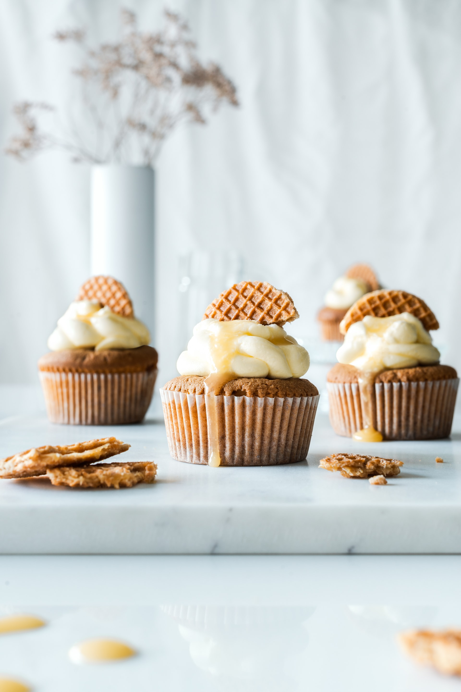

Cupcakes
Ingredientes: Para 3 personas
- 55g de manteca
- 110g de azucar
- 1 huevos
- 135g de harina
- 60ml de leche
- 5g de levadura
- vainilla a gusto
Preparación:
Calentamos el horno a 160º con calor arriba abajo, sin aire. Preparamos una bandeja para hornear cupcakes con seis cápsulas de tamaño normal. Batimos la mantequilla con el azúcar hasta formar una crema. Aregamos el huevo y la vainilla (en polvo, pasta o esencia), sin dejar de batir. Por otro lado mezclamos la harina con la levadura y la agregamos a la masa tamizada. Unimos alternando con la leche y mezclamos con una lengua hasta que la masa sea homogénea. Con un racionador de helado vertemos una “bola” de masa en cada cápsula. Horneamos durante unos 15 minutos, depende un poco del horno y el tamaño de nuestros cupcakes. Dejamos reposar los cupcakes dentro de la bandeja, fuera del horno, unos cinco minutos y los pasamos a una rejilla hasta que se enfríen completamente.